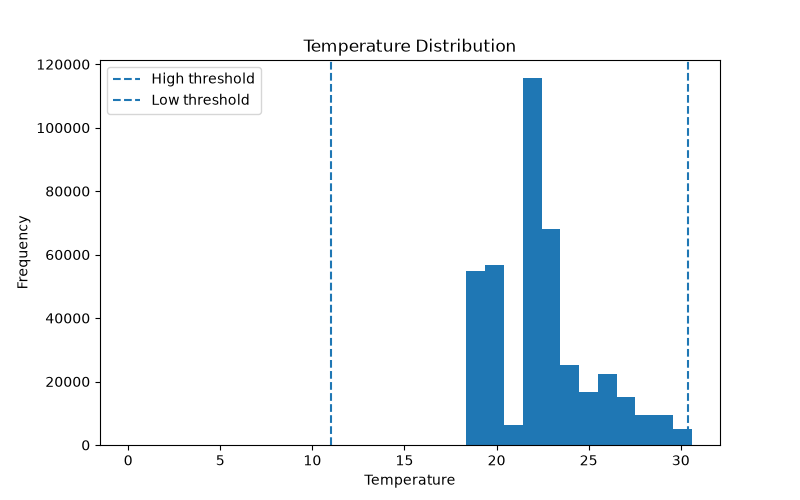
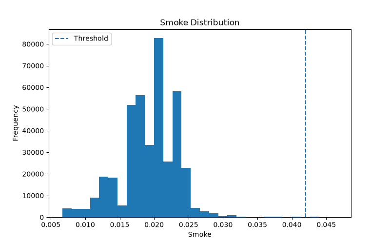
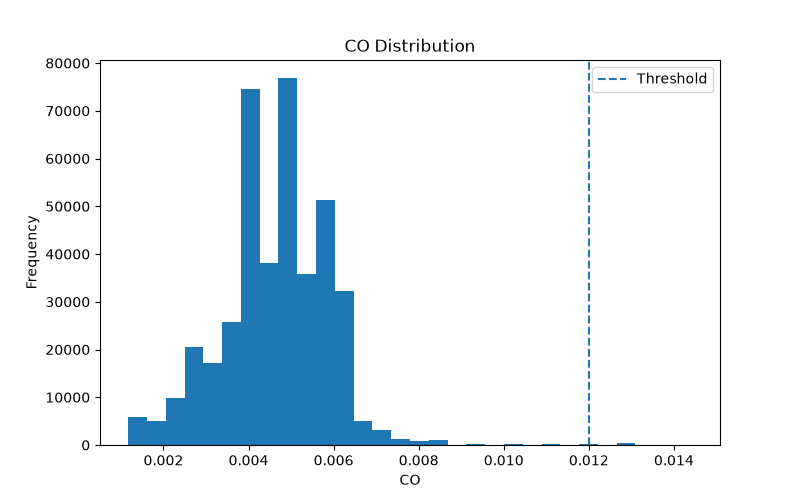

Municipal Environmental Information Service
Planner Message
Environmental warnings detected.
Recommended Action
Review alert areas and continue environmental monitoring.
Data Quality
No missing or invalid sensor values detected.
Service Status
warning
Latest Alert
Sensor:
00:0f:00:70:91:0a
Type:
low_temp
Value:
6.5
Alert Counts
-
High temperature:
692
-
Low temperature:
236
-
High smoke:
379
-
High CO:
469
Top Alert Sensors
Sensors generating the highest number of alerts
may require investigation.
- 00:0f:00:70:91:0a: 1017 alerts
- 1c:bf:ce:15:ec:4d: 759 alerts
Data Input Health
All batches completed successfully. No loading problems were detected.
Checks loading success, invalid records and
overall processing health.
-
Pipeline status:
healthy
-
MongoDB connection:
connected
-
Failed batches:
0
-
Invalid records:
0
-
Last successful run:
2026-06-13 14:07:11
Batch Processing Status
-
Last completed batch:
41
-
Records loaded:
405184
-
Status:
completed
Supporting Visualisations
Distribution plots support interpretation
of environmental conditions.


